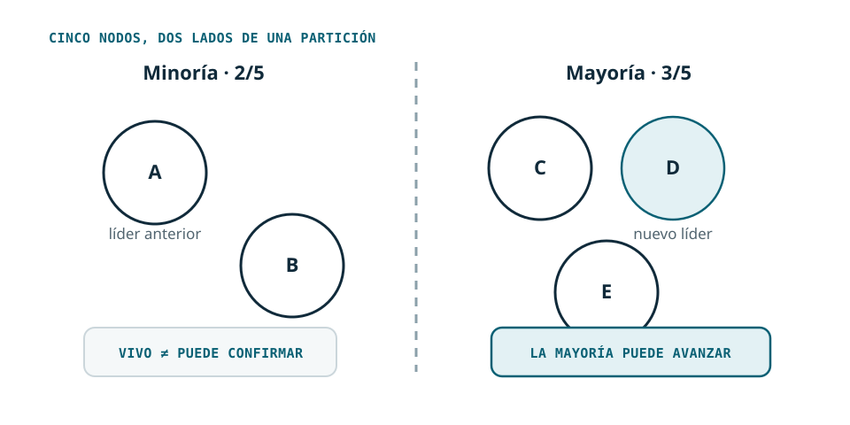

Coordinación II — Exclusión mutua, elecciones y acuerdo — Lección
Parte II — Comunicación y coordinación
Pregunta guía: ¿Cuándo el orden, el acceso exclusivo, la elección de líder y el consenso requieren mecanismos diferentes?
Antes de leer
Sección titulada «Antes de leer»Un algoritmo decide quién coordina; otro evita que dos nodos entren a la vez en una sección crítica; otro hace que varias réplicas acuerden un log. ¿Por qué no son el mismo problema?
Escribe primero una respuesta breve. No necesitas acertar todavía: necesitas una predicción que puedas revisar a medida que el capítulo te dé mejores modelos y evidencia.
Usa lo que ya sabes: La causalidad del Capítulo 6 y la diferencia entre silencio y fallo vista en ejemplos anteriores de tiempos de espera.
Mapa de carga de trabajo
Sección titulada «Mapa de carga de trabajo»Banco de práctica / reto: Las páginas de práctica guiada y comprobación identifican los casos esenciales exactos. Los casos restantes, las extensiones opcionales y las referencias avanzadas no forman parte de la carga esencial salvo que el profesor los asigne.
Alcance esencial: Este es intencionalmente el capítulo de coordinación más pesado. La ruta esencial del laboratorio es el calentamiento obligatorio, Checkpoints A–B, Pasos C–F, exploración acotada de schedules en el Paso I, pruebas transparentes e informe; los Pasos G–H siguen siendo extensiones.
SIN CONEXIÓNDescargar lección + práctica + laboratorio para estudio sin conexión (.zip)
Por qué importa este capítulo
Sección titulada «Por qué importa este capítulo»Es fácil confundir varios problemas de coordinación:
- la exclusión mutua pregunta quién puede entrar ahora en una sección crítica;
- la elección de líder pregunta qué participante debe coordinar un rol;
- el consenso pide a los participantes correctos acordar una decisión o una historia que evoluciona a pesar de los fallos.
Un lock centralizado puede proporcionar exclusión sin acuerdo replicado. Una elección tipo Bully o basada en anillo puede seleccionar un coordinador sin demostrar que los logs replicados son seguros. Un token puede serializar el acceso y, al mismo tiempo, convertirse en su propio problema de recuperación.
Traza primero estas diferencias. Después usa Raft para ver qué añade el acuerdo más allá de elegir simplemente un líder.
Escalera de coordinación: exclusión, elección y después acuerdo
Sección titulada «Escalera de coordinación: exclusión, elección y después acuerdo»La exclusión mutua coordina el acceso a una única sección crítica lógica
Sección titulada «La exclusión mutua coordina el acceso a una única sección crítica lógica»Supón que tres procesos deben actualizar un recurso que no puede aceptar de forma segura varios escritores concurrentes.
Un coordinador central puede conceder permiso:
P1 → coordinador: request
coordinador → P1: grant
P1 → coordinador: releaseEs fácil de entender, pero el coordinador se convierte en una dependencia para el liveness. Si falla después de conceder el permiso, la recuperación debe determinar si el permiso anterior sigue siendo válido.
Un diseño basado en permisos pide autorización a los peers antes de entrar. Elimina un coordinador permanente, pero aumenta el número de mensajes y hace importantes los supuestos sobre membership.
Un diseño basado en token entrega a un único token la autoridad para entrar:
P1 → P2 → P3 → P1
tokenEl token hace intuitiva la exclusión, pero crea otro problema de recuperación: ¿qué ocurre si el poseedor falla o el token parece haberse perdido? Recrearlo sin cuidado puede producir dos tokens aparentemente válidos y violar safety.
La lección importante no es memorizar tres algoritmos. Es separar:
safety: como máximo un proceso en la sección crítica
liveness: un solicitante correcto termina entrandoLa elección de líder escoge un coordinador, no una historia confirmada
Sección titulada «La elección de líder escoge un coordinador, no una historia confirmada»Una elección estilo Bully usa identificadores ordenados de procesos. Cuando un participante cree que el coordinador no está disponible, contacta a participantes con identificadores mayores. Si ninguno responde, se declara coordinador; si alguno responde, un participante de mayor prioridad continúa la elección.
Una elección basada en anillo hace circular identificadores de candidatos por un anillo lógico hasta que se conoce el ganador.
Estos algoritmos ilustran ideas útiles:
- la elección depende de una vista de membership;
- el silencio se interpreta mediante supuestos de timeout;
- distintos participantes pueden tener temporalmente vistas diferentes;
- elegir un coordinador no reconcilia por sí mismo el estado de la aplicación.
Pausa y predice. Una elección en anillo selecciona al nodo C como coordinador mientras un antiguo coordinador A, aislado, sigue ejecutándose. ¿Ya resolvió el sistema qué escrituras de A o C son autoritativas? No: la elección escogió un rol; el acuerdo aún necesita una regla para el estado o la historia.
El consenso vincula la autoridad con decisiones preservadas
Sección titulada «El consenso vincula la autoridad con decisiones preservadas»El consenso añade una exigencia más fuerte: un coordinador nuevo no puede comenzar simplemente una historia desde cero. Debe preservar las decisiones que ya se tomaron de forma segura.
Ese es el puente hacia Raft:
exclusión mutua → ¿quién puede actuar ahora?
elección de líder → ¿quién coordina ahora?
consenso → ¿qué decisiones siguen siendo autoritativas tras un cambio de líder?La replicación nos dará pronto un problema difícil: mantener varias copias del estado solo es útil si las decisiones de esas copias pueden reconciliarse de forma segura.
Podemos mantener varias copias del estado, pero un servicio replicado suele necesitar un único orden autoritativo para sus actualizaciones.
Supón que cinco réplicas reciben dos comandos concurrentes:
set x = 7
set x = 9Si distintas réplicas aplican permanentemente esos comandos en órdenes diferentes, pueden terminar en estados diferentes.
Un primario puede serializar las solicitudes, pero solo mientras todos estén de acuerdo sobre qué proceso es el primario.
Ahora introduce un fallo:
leader L deja de ser alcanzableAlgunos nodos creen que L falló. Otros todavía pueden comunicarse con L. La red puede estar particionada. Puede elegirse un líder de reemplazo. Mensajes antiguos pueden seguir llegando.
El desafío ya no consiste solo en detectar un fallo.
Es:
¿Cómo pueden nodos independientes acordar una única secuencia de decisiones que evoluciona a pesar de crashes y particiones?
Ese es el problema de consenso.
El consenso sustenta muchos servicios replicados con consistencia fuerte, sistemas de coordinación, servicios de metadatos y planos de control tolerantes a fallos.
Este capítulo usa Raft como modelo principal de implementación porque divide el consenso en piezas comprensibles: elección de líder, replicación del log y restricciones de safety. Paxos y Multi-Paxos aparecen para que entiendas que Raft pertenece a una familia más amplia de enfoques de consenso y no es la definición de consenso en sí misma.
1. Consenso es acuerdo sobre una decisión bajo fallo
Sección titulada «1. Consenso es acuerdo sobre una decisión bajo fallo»Una instancia individual de consenso pide a varios nodos acordar un único valor.
Un conjunto introductorio útil de propiedades es:
Acuerdo
Sección titulada «Acuerdo»Los participantes correctos no deciden valores diferentes para la misma instancia de consenso.
Validez
Sección titulada «Validez»El valor decidido debe satisfacer la regla de validez del protocolo; normalmente la decisión debe estar relacionada con valores propuestos en lugar de inventar un valor arbitrario.
Terminación
Sección titulada «Terminación»Bajo los supuestos de tiempo y fallo necesarios para liveness, los participantes correctos terminan decidiendo.
Las definiciones formales exactas dependen del modelo de consenso, pero la distinción de ingeniería es esencial:
safety: no decidir valores en conflicto
liveness: terminar decidiendo algoDurante fallos graves, un protocolo de consenso puede conservar safety mientras pierde temporalmente liveness.
2. Los servicios replicados necesitan consenso repetido, no una sola decisión
Sección titulada «2. Los servicios replicados necesitan consenso repetido, no una sola decisión»Un servicio key/value no decide un único valor durante toda su vida.
Necesita una secuencia ordenada:
index 1: PUT x=1
index 2: PUT y=8
index 3: DELETE x
index 4: PUT z=4
...Esto conduce a la abstracción de log replicado.
Si las réplicas acuerdan el mismo comando confirmado en cada índice del log y después ejecutan los comandos de forma determinista, pueden construir una máquina de estados replicada. Los capítulos de tolerancia a fallos retomarán persistencia, replay, snapshots y recuperación.
Por tanto, un servicio de consenso práctico suele resolver:
acuerdo sobre un prefijo de log que evoluciona.

3. Elegir un líder no equivale a resolver consenso
Sección titulada «3. Elegir un líder no equivale a resolver consenso»Muchos sistemas eligen un líder.
Pero seleccionar un proceso en un instante concreto no resuelve por sí solo todos los requisitos del consenso.
Todavía quedan preguntas:
- ¿pueden existir temporalmente dos líderes?
- ¿qué escrituras de qué líder son autoritativas?
- ¿qué ocurre si vuelve el líder anterior?
- ¿cómo se reconcilian logs de diferentes terms?
- ¿qué entradas están confirmadas?
Un algoritmo de elección de líder puede ser útil sin proporcionar un log replicado.
Raft integra la elección con reglas de safety del log para que el liderazgo tenga un significado seguro para una máquina de estados replicada.
4. Una votación a nivel de aplicación no es consenso distribuido
Sección titulada «4. Una votación a nivel de aplicación no es consenso distribuido»Supón que tres agentes de IA votan una respuesta:
agente A -> respuesta X
agente B -> respuesta X
agente C -> respuesta Y
mayoría -> XEsta es una regla de decisión de la aplicación.
No proporciona automáticamente:
- acuerdo entre réplicas distribuidas ante pérdida de mensajes;
- estado decidido y durable;
- recuperación tras crashes;
- épocas de líder;
- safety del prefijo del log;
- protección frente a participantes obsoletos.
Del mismo modo, tres usuarios votando dentro de una aplicación web no están implementando Raft.
El consenso es un protocolo con supuestos explícitos de fallo y propiedades explícitas de safety y liveness.
5. Por qué importan las mayorías
Sección titulada «5. Por qué importan las mayorías»Para N réplicas, una mayoría estricta contiene más de la mitad de los nodos.
Ejemplos:
N=3 -> mayoría=2
N=5 -> mayoría=3
N=7 -> mayoría=4Dos mayorías estrictas cualesquiera se intersectan.
Para N=5:
mayoría A = {1,2,3}
mayoría B = {3,4,5}
intersección = {3}Esta intersección es poderosa porque la información aceptada por una mayoría no puede ser completamente invisible para toda mayoría posterior.
La intersección de mayorías es solo un ingrediente. El protocolo debe especificar qué información debe preservar un nodo de la intersección y cómo la usan los líderes futuros.
6. Un clúster de 5 nodos tolera dos nodos no disponibles para progresar por mayoría
Sección titulada «6. Un clúster de 5 nodos tolera dos nodos no disponibles para progresar por mayoría»Con cinco nodos, un líder necesita comunicarse con al menos dos followers para formar una mayoría de tres.
Por tanto:
5 nodos
2 no disponibles
quedan 3 -> todavía puede existir mayoríaSi solo pueden comunicarse dos:
2/5 -> no hay mayoríaEl clúster debe preservar safety, pero normalmente no puede confirmar nuevas decisiones de consenso que requieren una mayoría.
Es un ejemplo de sacrificar liveness o disponibilidad durante una partición para proteger el acuerdo.
7. Las particiones hacen que «¿quién es el líder?» dependa del observador
Sección titulada «7. Las particiones hacen que «¿quién es el líder?» dependa del observador»Supón que un clúster de cinco nodos se divide:
A B C X D EAntes de la división, D podía ser el líder.
D todavía puede creer temporalmente que sigue siendo líder.
Pero D y E son solo dos de cinco nodos. No pueden formar una mayoría.
A/B/C pueden terminar eligiendo un líder nuevo porque son tres nodos.
Durante un intervalo puede ocurrir:
D puede pensar localmente "soy líder"
un nodo nuevo de ABC puede pensar "soy líder"¿Cómo puede sobrevivir safety a esta aparente situación con dos líderes?
Porque creer que se es líder no autoriza por sí solo a confirmar entradas. Los terms, los acknowledgements de mayoría y las reglas del log determinan qué operaciones pueden quedar confirmadas.
Este modelo mental es esencial.
8. Raft organiza el tiempo en terms
Sección titulada «8. Raft organiza el tiempo en terms»Raft asocia la actividad con terms crecientes monótonamente.
Conceptualmente:
term 1
term 2
term 3
...Un term suele comenzar con una elección. Las reglas de voto deben impedir que se elija más de un líder en un mismo term, aunque algunos terms pueden terminar sin líder debido a votos divididos o fallos.
Cada mensaje transporta un term.
Los terms proporcionan un mecanismo de época.
Un nodo que observa un term mayor aprende que su información actual de liderazgo o elección ha quedado obsoleta.
9. Los nodos Raft tienen tres roles principales
Sección titulada «9. Los nodos Raft tienen tres roles principales»A alto nivel:
Follower
Candidate
LeaderFollower
Sección titulada «Follower»Responde a leaders y candidates y espera comunicación válida de un líder.
Candidate
Sección titulada «Candidate»Inicia una elección después de un election timeout, incrementa su term, vota por sí mismo y solicita votos.
Acepta o coordina la replicación del log y envía mensajes AppendEntries, incluidos AppendEntries vacíos que funcionan como heartbeats.
Los roles pueden cambiar repetidamente durante la vida del proceso.
10. Los election timeouts convierten el silencio en un disparador de liveness
Sección titulada «10. Los election timeouts convierten el silencio en un disparador de liveness»El Capítulo 10 enseña que el silencio no puede demostrar que el líder murió.
Raft no necesita una prueba perfecta.
Un follower que deja de recibir durante suficiente tiempo comunicación válida del líder puede iniciar una nueva elección.
Es una decisión de liveness basada en sospecha.
Si el líder anterior solo estaba lento, el mecanismo de terms permite que la información de un term mayor obligue al liderazgo obsoleto a retirarse.
Este patrón es importante:
La detección de fallos puede ser imperfecta mientras la safety del protocolo esté protegida por épocas o terms y reglas de quórum.
11. Election timeouts aleatorios reducen votos divididos repetidos
Sección titulada «11. Election timeouts aleatorios reducen votos divididos repetidos»Si todos los followers agotaran su timeout exactamente en el mismo instante, varios podrían convertirse en candidates a la vez.
En un clúster de cinco nodos:
candidate A obtiene {A,B}
candidate C obtiene {C,D}
E todavía no ha votadoNingún candidate alcanza tres votos.
Raft usa election timeouts aleatorios para que sea probable que un candidate empiece antes, contacte a los followers, gane una mayoría y comience a enviar heartbeats antes de que los demás alcancen su timeout.
La aleatoriedad ayuda al liveness; no es el mecanismo principal de safety.
12. Un nodo vota como máximo una vez por term
Sección titulada «12. Un nodo vota como máximo una vez por term»Una regla persistente importante es:
Un servidor concede como máximo un voto en un term dado.
Supón que un clúster de cinco nodos eligiera dos líderes en el mismo term.
Cada uno necesitaría una mayoría de al menos tres votos.
Las dos mayorías tendrían que intersectarse.
El nodo de la intersección tendría que haber votado por ambos candidates dentro del mismo term, violando la regla de un voto por term.
Así, la intersección de mayorías junto con el estado estable del voto protege la unicidad de la elección dentro de un term.
13. currentTerm y votedFor son estado persistente relevante para safety
Sección titulada «13. currentTerm y votedFor son estado persistente relevante para safety»Si un nodo falla y olvida que ya votó en el term 8, podría reiniciarse y conceder otro voto en el term 8.
Eso rompería el argumento de safety de la elección.
Por tanto, las implementaciones de Raft persisten metadatos críticos como:
currentTerm
votedFor
logantes de depender de esas actualizaciones como estado estable del protocolo.
Los capítulos de tolerancia a fallos ampliarán las implicaciones de almacenamiento y recuperación.
14. Los terms mayores invalidan la autoridad obsoleta
Sección titulada «14. Los terms mayores invalidan la autoridad obsoleta»Supón que el leader L está en el term 5.
Una partición aísla a L mientras una mayoría elige un líder nuevo en el term 6.
Más tarde L recibe un mensaje que contiene term 6.
L debe reconocer que su autoridad del term 5 está obsoleta y volver al rol follower.
Esto impide que un líder antiguo que regresa continúe actuando indefinidamente como si su autoridad anterior siguiera siendo válida.
Por eso los terms están estrechamente relacionados con las ideas de encarnación y época introducidas antes.
15. Las elecciones deben tener en cuenta qué log está más actualizado
Sección titulada «15. Las elecciones deben tener en cuenta qué log está más actualizado»Elegir a cualquier candidate con mayoría no basta para la safety de un log replicado.
Supón que candidate A tiene un log antiguo mientras candidate B conserva entradas que ya habían sido confirmadas.
Si A pudiera convertirse en líder y sobrescribir la historia confirmada, el acuerdo se rompería.
Por eso Raft restringe el voto usando el term y el índice de la última entrada del log del candidate; los votantes rechazan candidates cuyos logs no están suficientemente actualizados según la regla del protocolo.
Este es el puente desde elección de líder hacia completitud del líder.
El líder no se selecciona solo porque esté vivo o sea rápido.
También debe ser seguro respecto a la historia replicada.
16. Las entradas del log contienen índice y term
Sección titulada «16. Las entradas del log contienen índice y term»Una entrada simplificada de un log Raft contiene:
index
term
commandEjemplo:
1 term1 PUT x=1
2 term1 PUT y=4
3 term2 DELETE x
4 term3 PUT z=8El índice identifica la posición dentro del log ordenado.
El term identifica la época de liderazgo que creó la entrada.
Ambos son necesarios para detectar historias en conflicto.
17. AppendEntries replica el log y comprueba la continuidad del prefijo
Sección titulada «17. AppendEntries replica el log y comprueba la continuidad del prefijo»El líder envía AppendEntries a los followers con información sobre la posición del log inmediatamente anterior a las entradas nuevas.
Conceptualmente:
prevLogIndex
prevLogTerm
entries[]
leaderCommitUn follower acepta entradas nuevas solo cuando la posición anterior del log coincide con la condición esperada de term e índice.
Esta comprobación impide que el líder añada entradas ciegamente sobre un prefijo incompatible.
Si el log del follower entra en conflicto, el líder retrocede y repara el sufijo hasta que los logs coincidan en el límite.
18. Los heartbeats no son un tipo mágico de mensaje separado
Sección titulada «18. Los heartbeats no son un tipo mágico de mensaje separado»En Raft, un heartbeat puede entenderse como un AppendEntries sin entradas nuevas.
Sigue transportando metadatos importantes, como el term y la información de commit.
Conviene enfatizarlo porque es fácil implementar un «subsistema de heartbeat» separado cuya semántica termine alejándose de la del protocolo real del log.
La señalización de liveness del líder y la replicación del log pertenecen al mismo mecanismo de autoridad.
19. Log matching proporciona una propiedad de prefijo compartido
Sección titulada «19. Log matching proporciona una propiedad de prefijo compartido»Una propiedad central de Raft dice, aproximadamente:
Si dos logs contienen una entrada con el mismo índice y term, entonces sus entradas anteriores son iguales.
La comprobación de consistencia de AppendEntries y las reglas de reparación del líder sostienen esta propiedad.
Esto permite que un líder razone sobre prefijos de followers sin comparar logs completos en cada mensaje.
20. Los followers pueden contener entradas no confirmadas que luego desaparecen
Sección titulada «20. Los followers pueden contener entradas no confirmadas que luego desaparecen»Considera un líder antiguo que replicó la entrada X solo a un follower antes de perder el liderazgo.
líder antiguo: ... X
follower: ... X
otros nodos: ...Si X nunca llegó a estar confirmada, un líder legítimo posterior puede llevar una entrada diferente en esa posición y sobrescribir el sufijo no confirmado que entra en conflicto.
Puedes sentir la tentación de tratar «escrito en un archivo de log» como equivalente a «confirmado».
No lo es.
presente localmente != confirmado por consensoLa recuperación posterior distinguirá el estado durable local del log y el estado de aplicación confirmado.
21. La confirmación requiere evidencia de quórum
Sección titulada «21. La confirmación requiere evidencia de quórum»Un líder sigue el progreso de replicación, normalmente mediante match indexes de los followers.
Una entrada del log puede quedar confirmada cuando la regla de commit del protocolo se satisface por una mayoría y se cumplen las restricciones relevantes de term.
En un clúster de cinco nodos, una entrada replicada en:
líder + dos followersha llegado a tres nodos: una mayoría.
Pero la regla de commit de Raft es más sutil que «cualquier entrada almacenada en una mayoría queda inmediatamente confirmada».
El term de la entrada importa para que el líder pueda avanzar commitIndex con seguridad.
22. Por qué importa la regla de commit del term actual
Sección titulada «22. Por qué importa la regla de commit del term actual»Un líder de Raft avanza directamente el commit cuando una mayoría ha replicado una entrada de su term actual.
Cuando una entrada del term actual queda confirmada, las entradas anteriores del log del líder quedan confirmadas mediante el argumento de safety del prefijo.
Esta regla evita razonamientos inseguros sobre entradas de terms anteriores que, debido a historias complejas de cambios de líder, puedan encontrarse casualmente en una mayoría.
Para la implementación del curso debes seguir la regla de commit del artículo de Raft y no simplificarla a:
si un índice cualquiera del log existe en mayoría -> committedEse atajo puede romper safety.
23. commitIndex y lastApplied no son lo mismo
Sección titulada «23. commitIndex y lastApplied no son lo mismo»Un nodo puede saber que las entradas hasta el índice K están confirmadas y, aun así, no haber aplicado todavía todas a su máquina de estados de aplicación.
Dos variables útiles son:
commitIndex
lastAppliedEl nodo aplica las entradas confirmadas del log en orden:
while lastApplied < commitIndex:
lastApplied++
apply(log[lastApplied])Esta diferencia se vuelve central cuando añadimos recuperación durable.
El consenso determina qué comandos están confirmados y en qué orden.
La máquina de estados ejecuta esos comandos.
24. El estado del líder sigue el progreso de replicación de cada follower
Sección titulada «24. El estado del líder sigue el progreso de replicación de cada follower»Un líder típico mantiene estado por follower, por ejemplo:
nextIndex[follower]
matchIndex[follower]nextIndex
Sección titulada «nextIndex»Es el siguiente índice del log que el líder espera enviar a ese follower.
matchIndex
Sección titulada «matchIndex»Es el mayor índice del log que se sabe replicado en ese follower.
Cuando AppendEntries falla porque el prefijo del follower no coincide, el líder ajusta nextIndex hacia atrás hasta encontrar un punto común y después repara el sufijo del follower.
Existen optimizaciones que aceleran este proceso, pero este comportamiento conceptual es suficiente para la implementación de pregrado.
25. Ejemplo trabajado — voto dividido
Sección titulada «25. Ejemplo trabajado — voto dividido»Cinco nodos A–E comienzan en term 4.
A y C alcanzan su timeout casi a la vez y ambos inician term 5.
Votos:
A: A,B
C: C,D
E: todavía no votaNinguno alcanza la mayoría de 3.
Con el tiempo ocurre otro election timeout.
Supón que C alcanza primero su timeout, incrementa a term 6 y solicita votos.
Los nodos que ven term 6 actualizan su term y pueden votar según las reglas normales.
C obtiene C,D,E y se convierte en líder del term 6.
Safety nunca se violó porque dos candidates no obtuvieron simultáneamente mayorías dentro del mismo term.
26. Ejemplo trabajado — líder antiguo en una partición minoritaria
Sección titulada «26. Ejemplo trabajado — líder antiguo en una partición minoritaria»Líder inicial A, term 8:
A B C D EPartición:
A B X C D EA sigue siendo líder localmente en term 8, pero no puede replicar entradas nuevas a una mayoría.
C/D/E eligen a D en term 9.
D puede confirmar entradas nuevas usando la mayoría de tres nodos.
Cuando la partición se repara, A recibe información de term 9 y deja el rol de líder.
Cualquier sufijo no confirmado del term 8 que entre en conflicto con el log de D se repara.
El resultado importante es:
Que el lado minoritario crea temporalmente que conserva el liderazgo no implica que pueda confirmar nuevo estado autoritativo.
27. Ejemplo trabajado — un candidate obsoleto no obtiene el voto
Sección titulada «27. Ejemplo trabajado — un candidate obsoleto no obtiene el voto»Supón que tres nodos tienen:
A log: [1:t1, 2:t2, 3:t4]
B log: [1:t1, 2:t2, 3:t4]
C log: [1:t1, 2:t2]C alcanza el timeout y solicita votos para un term nuevo.
Aunque C pueda tener un term de elección actual mayor después de incrementarlo, su log está menos actualizado que los de A/B según la regla de frescura de logs de Raft.
A y B deben rechazar la solicitud de voto de C.
Esto evita que un candidate al que le falta la entrada nueva se convierta en líder simplemente por haber agotado primero su timeout.
28. Ejemplo trabajado — sufijo en conflicto de un follower
Sección titulada «28. Ejemplo trabajado — sufijo en conflicto de un follower»El líder L tiene:
1:t1 2:t1 3:t2 4:t4 5:t4El follower F tiene:
1:t1 2:t1 3:t2 4:t3 5:t3 6:t3Los logs coinciden hasta el índice 3 y divergen después.
L no puede simplemente añadir el índice 6.
Debe encontrar el límite del prefijo común, eliminar o sustituir el sufijo en conflicto de F y replicar su propio sufijo autoritativo:
1:t1 2:t1 3:t2 4:t4 5:t4suponiendo que L es el líder legítimo según el protocolo completo.
29. Election safety y state-machine safety son propiedades diferentes
Sección titulada «29. Election safety y state-machine safety son propiedades diferentes»Es útil separar conceptualmente las propiedades de safety de Raft.
Election safety
Sección titulada «Election safety»Como máximo puede elegirse un líder en un term dado.
Leader append-only
Sección titulada «Leader append-only»Un líder no sobrescribe ni elimina entradas en su propio log; añade entradas nuevas.
Log matching
Sección titulada «Log matching»Entradas con el mismo term e índice implican prefijos coincidentes.
Leader completeness
Sección titulada «Leader completeness»Las entradas confirmadas aparecen en los logs de los líderes futuros.
State-machine safety
Sección titulada «State-machine safety»Servidores diferentes no aplican comandos diferentes para el mismo índice del log.
Las formulaciones formales exactas pertenecen al artículo de Raft. El punto educativo es que «Raft es seguro» se descompone en varios invariantes que pueden probarse y razonarse por separado.
30. Safety no debe depender de tiempos favorables
Sección titulada «30. Safety no debe depender de tiempos favorables»Los election timeouts influyen en cuándo ocurren las elecciones.
No deben determinar si valores en conflicto pueden quedar confirmados.
Este es un principio central del diseño de consenso:
Los supuestos temporales pueden ser necesarios para liveness, pero safety debe sobrevivir a retrasos y reordenamientos arbitrarios dentro del modelo de fallos del protocolo.
Una red muy lenta puede impedir el progreso.
No debe hacer que dos comandos diferentes queden confirmados en el mismo índice.
31. FLP aporta contexto importante sobre liveness
Sección titulada «31. FLP aporta contexto importante sobre liveness»El resultado de imposibilidad de Fischer-Lynch-Paterson muestra que el consenso determinista no puede garantizar terminación en un sistema completamente asíncrono con incluso un solo fallo por crash bajo el modelo estándar.
Para este curso, lo importante no es la demostración.
Es:
Existe una diferencia fundamental entre conservar el acuerdo y garantizar progreso bajo incertidumbre completamente no acotada.
Los protocolos prácticos usan supuestos o mecanismos adicionales —sincronía parcial, timeouts, líderes, temporización aleatoria o detectores de fallos— para obtener un liveness útil.
Por eso los election timeouts de Raft deben entenderse como parte de una estrategia práctica de liveness, no como conocimiento perfecto de los fallos.
32. Paxos resuelve de otra forma el mismo problema fundamental de acuerdo
Sección titulada «32. Paxos resuelve de otra forma el mismo problema fundamental de acuerdo»Paxos es históricamente fundamental.
Una explicación de Paxos básico o de decreto único suele introducir roles como proposers, acceptors y learners y usa propuestas o ballots numerados junto con intersección de quórums para preservar el acuerdo.
El protocolo suele presentarse mediante dos fases conceptuales:
prepare/promise
accept/acceptedcon reglas que obligan a que las propuestas posteriores preserven valores ya elegidos.
Los detalles son diferentes a Raft, pero comparten ideas:
- intersección de quórums;
- información de ballot o época creciente;
- preservación de información aceptada o confirmada anteriormente;
- safety a pesar de pérdida/reordenamiento de mensajes y fallos por crash.
33. Multi-Paxos optimiza decisiones repetidas alrededor de un liderazgo estable
Sección titulada «33. Multi-Paxos optimiza decisiones repetidas alrededor de un liderazgo estable»Ejecutar una instancia completa e independiente de Paxos para cada posición del log puede ser costoso.
Multi-Paxos usa un patrón de líder o coordinador estable para que las decisiones repetidas del log puedan avanzar de forma eficiente una vez establecido el liderazgo.
Esto acerca la arquitectura práctica a la de logs replicados basados en líder.
El curso no exige implementar Paxos salvo que un estudiante lo elija explícitamente para un proyecto avanzado o final.
Aun así, debes poder comparar sus mecanismos conceptuales con Raft.
34. Raft y Paxos no deben enseñarse como el eslogan «fácil frente a difícil»
Sección titulada «34. Raft y Paxos no deben enseñarse como el eslogan «fácil frente a difícil»»Raft fue diseñado explícitamente buscando comprensibilidad y descompone el problema de otra manera.
Paxos tiene una literatura enorme y muchas variantes prácticas.
Una comparación útil pregunta:
¿Cómo se representa una época o ballot?
¿Cómo preserva decisiones anteriores la intersección de quórums?
¿Cómo se establece un líder o coordinador?
¿Cómo se manejan posiciones repetidas del log?
¿Cómo se realiza la recuperación?El objetivo no es declarar que uno es universalmente superior.
35. Los leader leases son una optimización con supuestos temporales
Sección titulada «35. Los leader leases son una optimización con supuestos temporales»Algunos sistemas usan leases para permitir que un líder responda ciertas solicitudes sin contactar a un quórum cada vez.
Un lease depende de supuestos sobre tiempo transcurrido y comportamiento de relojes.
El Capítulo 6 enseñó que los relojes lógicos no miden segundos; el Capítulo 10 enseñó que los retrasos introducen incertidumbre.
Por eso las optimizaciones basadas en leases deben declarar cuidadosamente su modelo temporal.
La implementación base de Raft del Capítulo 7 no debe necesitar optimizaciones por lease.
Primero corrección; después optimización.
36. El consenso no resuelve todos los problemas distribuidos
Sección titulada «36. El consenso no resuelve todos los problemas distribuidos»El consenso puede establecer una única secuencia ordenada de decisiones, pero no proporciona automáticamente:
- sharding eficiente;
- transacciones de aplicación entre grupos independientes;
- edición offline sin conflictos;
- routing DHT;
- tolerancia segura a fallos bizantinos;
- analítica de alto throughput;
- idempotencia de la aplicación.
El consenso es un mecanismo poderoso que tiene coste de coordinación.
Úsalo cuando la aplicación necesite las garantías que proporciona.
37. El consenso no elimina la ambigüedad de RPC para los clientes
Sección titulada «37. El consenso no elimina la ambigüedad de RPC para los clientes»Supón que un cliente envía el comando R7 al líder.
El líder replica y confirma R7.
Antes de que la respuesta llegue al cliente, falla la conexión.
El cliente sigue viendo:
timeoutEl consenso puede saber que R7 quedó confirmado, pero el cliente no.
Si el cliente hace retry, la máquina de estados debe reconocer la operación lógica duplicada.
Así, el problema de request ID e idempotencia del Capítulo 4 sobrevive al consenso.
El trabajo posterior de tolerancia a fallos lleva esta solución a la recuperación de una máquina de estados replicada.
38. Importa el límite «persistir antes de responder»
Sección titulada «38. Importa el límite «persistir antes de responder»»Supón que un follower concede un voto, pero responde antes de registrar de forma durable votedFor.
Falla, se reinicia, olvida el voto y concede otro voto en el mismo term.
Una optimización aparentemente pequeña del orden de almacenamiento puede romper election safety.
De forma similar, añadir una entrada del log solo a memoria volátil y reconocer su replicación antes de la persistencia durable puede violar el modelo de crash-recovery pretendido.
Implementar consenso también es un problema de orden de almacenamiento.
39. Probar consenso requiere planificaciones adversarias
Sección titulada «39. Probar consenso requiere planificaciones adversarias»Un protocolo que funciona cuando:
el líder arranca primero
la red no tiene retraso
hay una sola solicitud cada vez
no hay crashesha demostrado muy poco.
Pruebas útiles incluyen:
- election timeouts simultáneos;
- retraso y reordenamiento de mensajes;
- reinicio de candidate;
- partición del líder;
- líder antiguo en minoría;
- sufijos no confirmados en conflicto;
- follower retrasado;
- crash después del límite de persistencia del voto;
- solicitudes repetidas de clientes;
- reparación de la partición.
El laboratorio te pide predecir los terms y logs esperados antes de inyectar fallos.
40. Los invariantes son más útiles que depurar línea por línea
Sección titulada «40. Los invariantes son más útiles que depurar línea por línea»Cuando Raft falla, pregunta qué invariante se violó.
Ejemplos:
votó dos veces en el mismo term
aceptó un term de líder obsoleto
confirmó sin mayoría
un líder futuro no contiene una entrada confirmada
aplicó un comando diferente en el mismo índiceDespués retrocede en la traza hasta la transición de implementación que permitió el error.
Esto escala mejor que mirar miles de líneas de logs de heartbeats.
41. La observabilidad debe exponer transiciones de estado del protocolo
Sección titulada «41. La observabilidad debe exponer transiciones de estado del protocolo»Eventos estructurados útiles incluyen:
node
term
role
leader_id
voted_for
last_log_index
last_log_term
commit_index
message type
peer
request_idNo registres por defecto todo el estado en cada heartbeat; solo crearía ruido.
Registra transiciones significativas:
- incremento de term;
- cambio de rol;
- voto concedido o rechazado;
- conflicto en AppendEntries;
- avance del commit index;
- pérdida del liderazgo.
El Capítulo 12 formaliza después el diseño de observabilidad.
44. Errores comunes
Sección titulada «44. Errores comunes»Error 1 — voto mayoritario significa consenso
Sección titulada «Error 1 — voto mayoritario significa consenso»El consenso requiere un protocolo que preserve decisiones a través de fallos y rondas o terms futuros.
Error 2 — un timeout demuestra que el líder murió
Sección titulada «Error 2 — un timeout demuestra que el líder murió»El election timeout es un disparador de liveness basado en sospecha.
Error 3 — el heartbeat está separado de AppendEntries
Sección titulada «Error 3 — el heartbeat está separado de AppendEntries»En Raft, el comportamiento de heartbeat normalmente es un AppendEntries vacío que transporta información de term y commit.
Error 4 — el candidate con el term más alto siempre debe ganar
Sección titulada «Error 4 — el candidate con el term más alto siempre debe ganar»También importan las restricciones de frescura del log.
Error 5 — una entrada persistida localmente significa que está confirmada
Sección titulada «Error 5 — una entrada persistida localmente significa que está confirmada»El commit es una propiedad de consenso, no de presencia en disco local.
Error 6 — cualquier entrada de un term antiguo replicada en mayoría puede confirmarse directamente
Sección titulada «Error 6 — cualquier entrada de un term antiguo replicada en mayoría puede confirmarse directamente»Importa la regla de commit del term actual de Raft.
Error 7 — el líder antiguo en minoría debe saber inmediatamente que perdió el liderazgo
Sección titulada «Error 7 — el líder antiguo en minoría debe saber inmediatamente que perdió el liderazgo»Puede seguir obsoleto localmente hasta recibir evidencia de un term mayor; su incapacidad de formar quórum impide nuevas confirmaciones.
Error 8 — el timeout aleatorio es el mecanismo de safety
Sección titulada «Error 8 — el timeout aleatorio es el mecanismo de safety»La aleatoriedad mejora principalmente el liveness de la elección al reducir colisiones.
Error 9 — el consenso convierte los retries del cliente en «exactly once»
Sección titulada «Error 9 — el consenso convierte los retries del cliente en «exactly once»»El cliente todavía puede perder la respuesta después del commit; sigue siendo necesaria la deduplicación.
Error 10 — pasar pruebas del camino normal demuestra que el consenso es correcto
Sección titulada «Error 10 — pasar pruebas del camino normal demuestra que el consenso es correcto»Son esenciales las planificaciones con fallos y las historias con conflictos de log.
45. Conexiones de sistemas
Sección titulada «45. Conexiones de sistemas»Los terms son épocas lógicas; los election timeouts usan duración física o monotónica para liveness.
La sospecha de fallo dispara elecciones, pero safety no depende de una detección perfecta de crashes.
El consenso proporciona un orden autoritativo para el estado replicado y un reemplazo de líder más seguro que un primary/backup estático.
[OS/STORAGE]
Sección titulada «[OS/STORAGE]»El term persistente, el voto y el estado del log deben sobrevivir crash-recovery según el modelo.
Particiones, retrasos y reordenamiento afectan liveness y las planificaciones de mensajes sin poder violar la safety del log confirmado.
El consenso añade comunicación por quórum y puede introducir un cuello de botella en el líder, pero también habilita semánticas de aplicación con consistencia fuerte relativamente simples.
Raft base supone participantes no bizantinos. Los canales autenticados pueden proteger la identidad de transporte, pero réplicas arbitrariamente maliciosas requieren un modelo de fallos diferente, estudiado en el Capítulo 12.
Transición al laboratorio
Sección titulada «Transición al laboratorio»El laboratorio del Capítulo 7 comienza solo con elección y después añade replicación del log.
Vas a particionar repetidamente un clúster de cinco nodos y responder antes de ejecutar:
¿Qué nodos pueden formar una mayoría?
¿Qué term debe ganar?
¿Puede el líder antiguo hacer commit?
¿Qué entradas del log pueden sobrescribirse?
¿Qué entradas deben sobrevivir en líderes futuros?La evidencia obligatoria incluye:
- una elección limpia;
- un voto dividido seguido de nueva elección;
- una partición con el líder antiguo en minoría;
- un candidate obsoleto rechazado por frescura del log;
- un log de follower en conflicto que se repara;
- una entrada confirmada por mayoría;
- una operación de cliente que se vuelve ambigua porque la respuesta se pierde después del commit.
Resumen del capítulo
Sección titulada «Resumen del capítulo»- El consenso es un problema de acuerdo a nivel de protocolo con propiedades de safety y liveness.
- Los servicios replicados necesitan acuerdo sobre una secuencia o log, no solo sobre un valor.
- Elegir un líder no hace seguro por sí solo el estado replicado.
- La intersección de mayorías garantiza que quórums posteriores compartan al menos un participante con mayorías anteriores, pero las reglas del protocolo determinan qué información se preserva.
- Los terms de Raft proporcionan épocas que invalidan autoridad obsoleta.
- Los election timeouts disparan acciones de liveness sin demostrar la muerte del líder.
- Un voto por term más la intersección de mayorías protege election safety.
- Las restricciones de frescura del log impiden que candidates obsoletos sustituyan historia confirmada.
- AppendEntries exige compatibilidad de prefijo y repara sufijos no confirmados en conflicto.
- Una entrada almacenada localmente no está necesariamente confirmada.
- La regla de commit por mayoría del term actual de Raft es relevante para safety.
- Las entradas confirmadas se aplican después a una máquina de estados determinista.
- Safety debe sobrevivir a tiempos adversos; liveness necesita supuestos adicionales de tiempo o fallo.
- Paxos y Raft resuelven la misma clase fundamental de acuerdo con estructuras diferentes.
- El consenso no resuelve automáticamente semántica exactly-once del cliente, transacciones, sharding ni fallos bizantinos.
Mantén presente la siguiente pregunta para tolerancia a fallos: ¿cómo se convierte un log acordado en un servicio útil cuyo estado sobreviva crashes y retries?